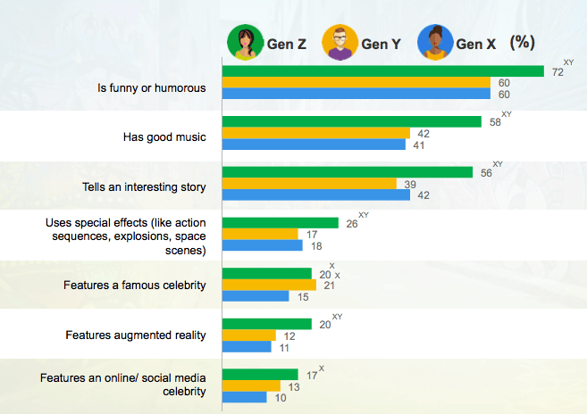
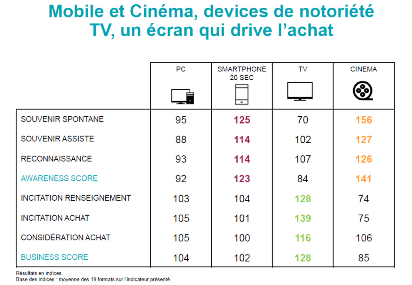
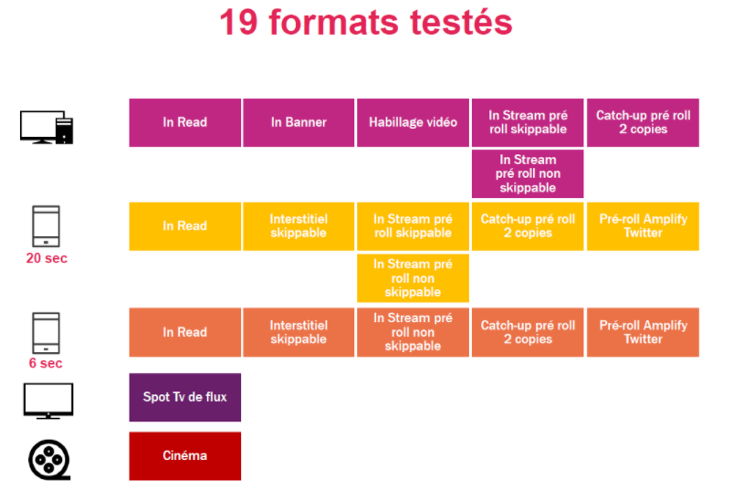

Atteindre et fidéliser les Z
Communication sur les réseaux sociaux
Etre présent sur les réseaux sociaux est extrêmement facile. Mais construire une communauté ainsi qu’une communication efficace l’est moins.
Sur les réseaux sociaux notoriété d’une entreprise, d’un produit peut être facilement dégradée par des consommateurs déçus. L’avantage de la communauté se transforme alors en publicité négative et peut avoir un réel impact sur les ventes et la santé d’une entreprise. La notoriété en ligne d’une marque est très difficile à contrôler. Les informations ne sont plus contrôlables une fois communiquées sur internet. Les réseaux sociaux ne sont pas à prendre à la légère pour les entreprises. Si une marque souhaite communiquer elle doit établir une stratégie de communication et un process en cas de crise.
Micro moment et Snack content
Le mobile est omniprésent dans le quotidien des Z. Chaque pause aussi courte soit elle, est l’occasion de consulter son portable. Les notifications sont une vraie drogue chez certains Z incapables de laisser une notifications non lue. L’addiction au smartphone est reconnue et serait créée par la sécrétion de dopamine dans le cerveau à chaque nouvelle notification. Certains naviguent d’application en application de manière automatique, par réflexe. Ce temps passé sur un téléphone est un vraie opportunité pour les annonceurs qui cherchent à cibler les Z. Seulement ces moments de "pause" sur mobile sont souvent de très courtes durées fragmentant ainsi les publicités.
Ce phénomène a favorisé le développement des Snack content, contenus courts et viraux que l’on retrouve sur de comptes de réseaux sociaux.
Sources:
invox.fr : comprendre le snackable content en 1min30
selligent.com : 7 façons de booster votre marketing digital grace aux micro moments
Ces micro moments, identifiés par Google en 2014, peuvent être catégorisés en 4 groupes répondant tous à une impulsion des mobinautes :
- "Je veux acheter !" (I-want-to-buy moments)
- "Je veux savoir !" (I-want-to-know moments)
- "Je veux aller !" (I-want-to-go moments)
- "Je veux faire !" (I-want-to-do moments)
Tout l’enjeu pour les marques est d’attirer et de retenir l’attention du client dès les premières secondes.
Exemple de snackable content :
- photos
- vidéos
- infographies
- citations
- gifs/mêmes
- stories
Multiplier les supports de communication permet de pallier à ce court instant d’attention.
L’étude "Consumers in the Micro-Moment" menée par Google et Ipsos indique que la recherche digitale accélère la décision d’achat chez 60 % des consommateurs en ligne.
Sources:
http://invox.fr/ressources/micro-moments-content-marketing/
http://www.selligent.com/fr/blogs/inspiration/7-facons-de-booster-votre-marketing-digital-grace-aux-micro-moments
Les micro moments imposent également aux entreprises de développer des sites mobiles et applications extrêmement rapides et performants.
L’attrait pour le snackable content et le mobile s’accordent parfaitement avec l’essor des réseaux sociaux. La présence en ligne passe également par eux. Aucune entreprise ne peut cibler les Z sans penser à une stratégie sur les réseaux sociaux.
L’importance du contenu - création de contenus
Proposer du contenu différenciant et qualitatif est le premier élément à prendre en compte pour les entreprises.
Le gadget ne marche qu’un temps. Les Gen Z doivent trouver une valeur ajoutée réelle au contenu ou service proposé. On accorde beaucoup d’importance au support technique, à l’innovation technique. Pourtant ce qui offre une réelle valeur ajoutée est le contenu. La technique doit servir le contenu, elle ne doit pas être la finalité. L’institut IHS technologies a récemment publié une étude sur l’impact du contenu sur le consommateur. Les résultats montrent qu’un contenu intéressant et cohérent engendre un meilleur taux d’engagement, une meilleure mémorisation de l’offre, ainsi que d’appropriation et de partage. L’importance du contenu est amplifiée lorsque des entreprises comme Facebook et Google annoncent que la publicité mobile sera d’ici 2020 en majorité native. Une bonne stratégie de brand content (définition en bas de page ) atteindra plus durablement et plus facilement le consommateur.
La cible et les objectifs
Etablir des objectifs permet de cibler les réseaux les plus efficaces et cohérents. Certains réseaux sont davantages plébiscités pour des campagnes d’image, d’autres serviront à engendrer des ventes et du trafic ou récolter des informations des clients.
Avant de lancer une campagne digitale il est important de définir la cible souhaitée. La quasi totalité des Gen Z utilisent les réseaux sociaux mais les réseaux utilisés changent en fonction de l’âge et du genre. On observe d’après une étude de Google que les femmes sont majoritaires sur les réseaux sociaux d’image tels que Instagram et Pinterest.
Lorsqu’une marque cible les Gen Z elle se doit de connaître leurs habitudes et préférences.
Une fois la cible et les objectifs définis, un benchmark (définition en bas de page)doit être effectué afin de connaître le positionnement et le poids des entreprises concurrentes sur les réseaux.
Le benchmark permet de se fixer des objectifs cohérents fonction des réseaux choisis.
La communication sur les réseaux demande moins de budget que les campagnes traditionnelles telles que l’affichage ou la télévision. Cependant penser qu'elle n’engendre aucun coût est une grande erreur.
Une bonne stratégie sur les réseaux permet d’augmenter la notoriété, générer du trafic en ligne ou en magasin et de créer un lien fort avec vos clients.
De nombreux types de formats existent sur les réseaux sociaux. Chaque réseau social a ses particularités et ses usages. Connaître les différences est primordial dans l’élaboration d’une stratégie de communication digitale.
Rebondir sur l’actualité fonctionne très bien auprès des Z.
Monoprix a, par exemple, surfé sur la folie de l’application pokemon go pour s’adresser aux Z :
Afin de relier le contenu autour d’une opération commerciale, les marques utilisent un hashtag défini. Le hashtag doit être comprehensible et résumé l’opération.
Grâce à ce hashtag, les Z pourront retrouver toutes les photos prises en rapport avec la campagne.
Quelques conseils sont applicables pour tous les réseaux :
- utiliser le storytelling (définition en bas de page) pour raconter une histoire autour de la marque
- être créatif pour se démarquer des autres marques
- tester différents types de posts et mécaniques puis analyser les résultats
- rester authentique et fidèle à l’esprit de la marque
- créer une relation privilégiée avec la communauté
- éviter le contenu dupliqué sans prendre en considération les codes du réseau
- favoriser le contenu court et visuel (snackable content)
- favoriser le format vidéo
- porter de l’importance au design, la musique et à l’esthétisme du contenu
- ne pas imposer une action
- favoriser l’interactivité et l’échange
Source : Etude Retail NukeSuite 2017
Actuellement le contenu le plus utilisé par les marques sur les réseaux sociaux est la photo malgré l'intérêt des Z pour la vidéo.
Le format vidéo
La place de la vidéo ne cesse d'augmenter. Notamment sur les réseaux sociaux avec "10 milliards de vues par jour sur Snapchat, 8 milliards sur Facebook, 4 milliards sur Youtube". cf : https://blog.comexplorer.com/le-role-des-reseaux-sociaux
Les usages changent, par exemple les publicités sont bloquées et les images fixes ne séduisent plus autant les Z sur les réseaux sociaux. Le format vidéo prend de plus en plus de place sur les plateformes sociales et engendre davantage de viralité et d’engagement.
- 64% des acheteurs sont prêts à passer à l'acte en commandant en ligne après avoir visionné une vidéo provenant d'une marque.
- Une vidéo diffusée sur les réseaux sociaux génère un engagement clients et leads 10 fois supérieur à celui d'un autre contenu.
- 73% des entreprises B to B affirment que la vidéo améliore le ROI de leurs actions webmarketing.
- 90% des acheteurs déclarent que la vidéo est essentielle dans leur processus de prise de décision.
- Après avoir visionné une vidéo, 75% des personnes interagissent sur les réseaux sociaux avec la marque qui l’a diffusée et 39% passent commande.
Source : https://blog.comexplorer.com/video-sur-les-reseaux-sociaux
Les Etats-Unis sont encore plus en avance. Certains médias utilisent uniquement la vidéo comme support de communication.
Exemple : https://www.facebook.com/ajplusenglish/
Publicis Media a sorti son étude comparative de l'efficacité multi-écrans.
 